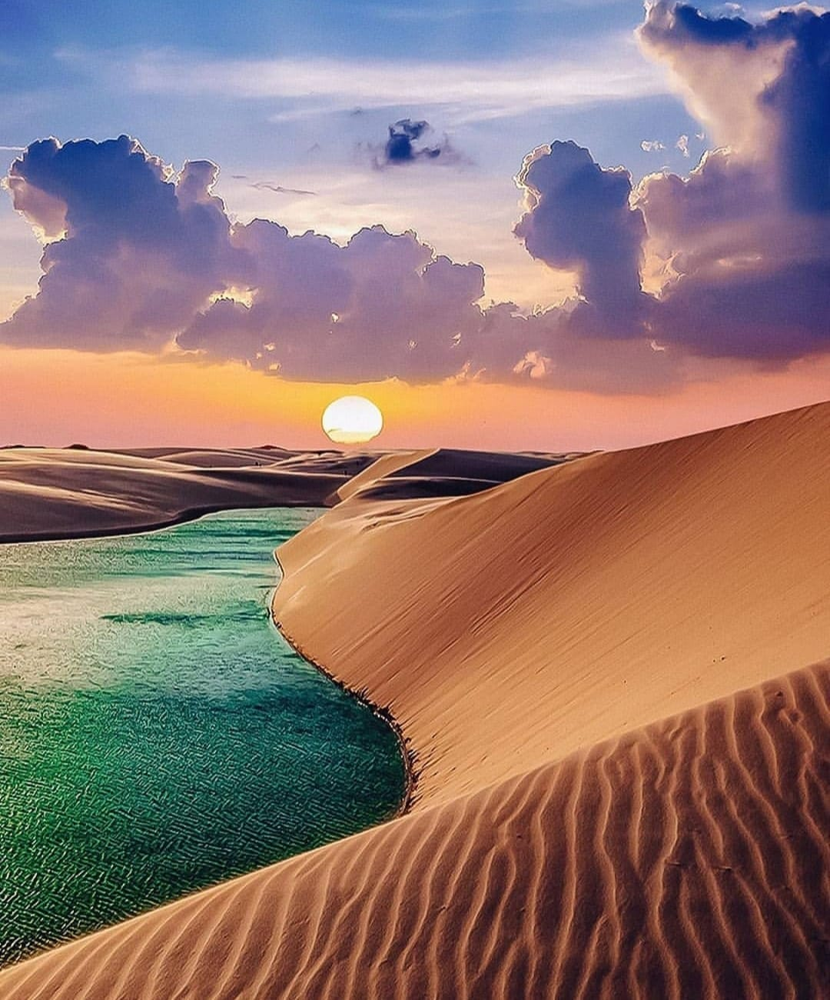
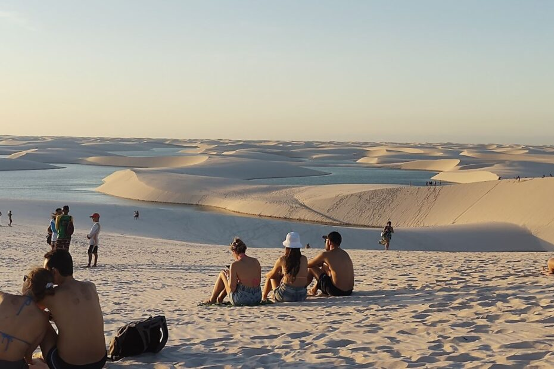
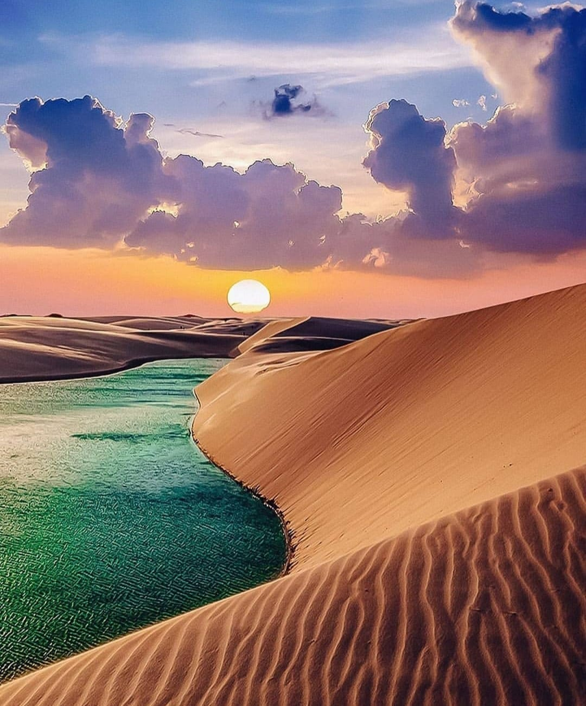
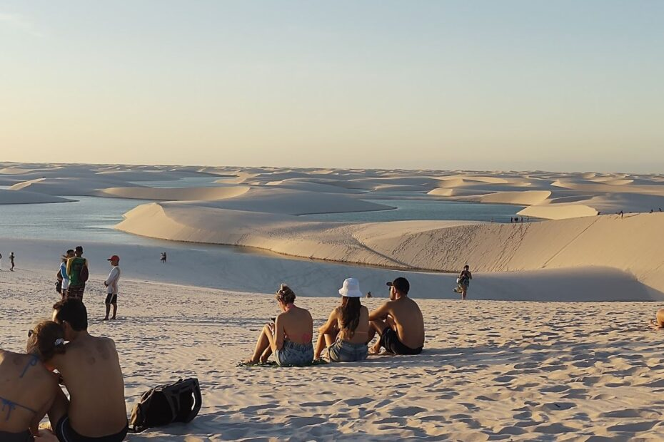
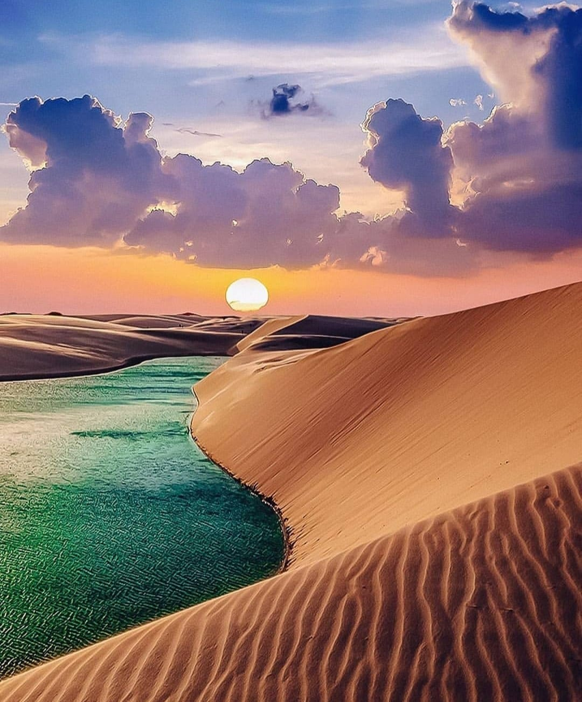
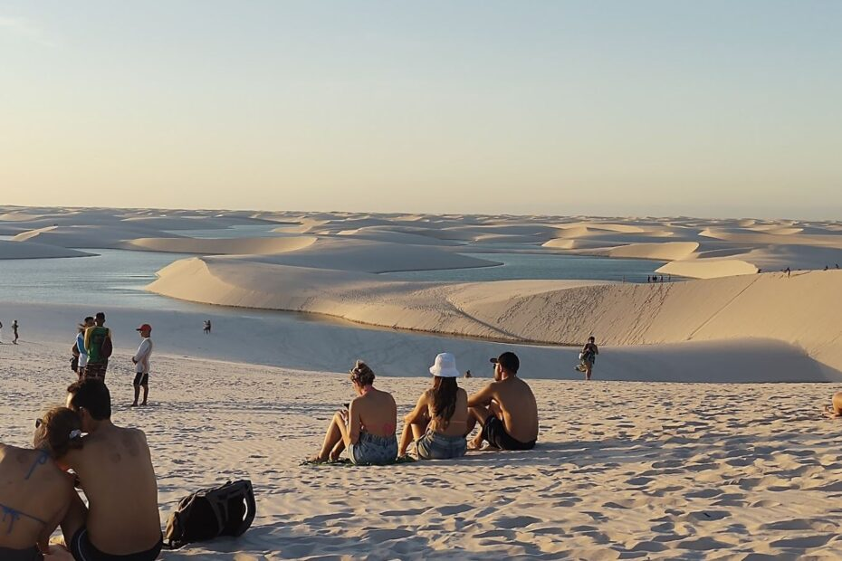
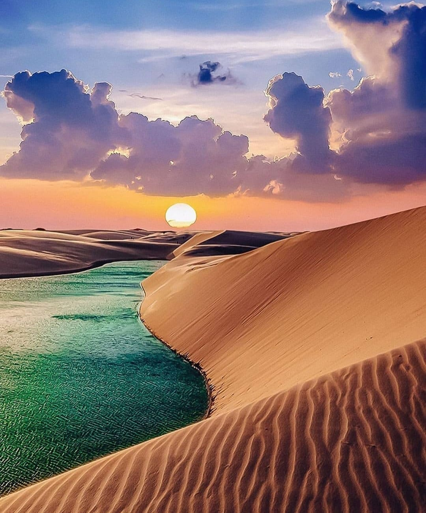
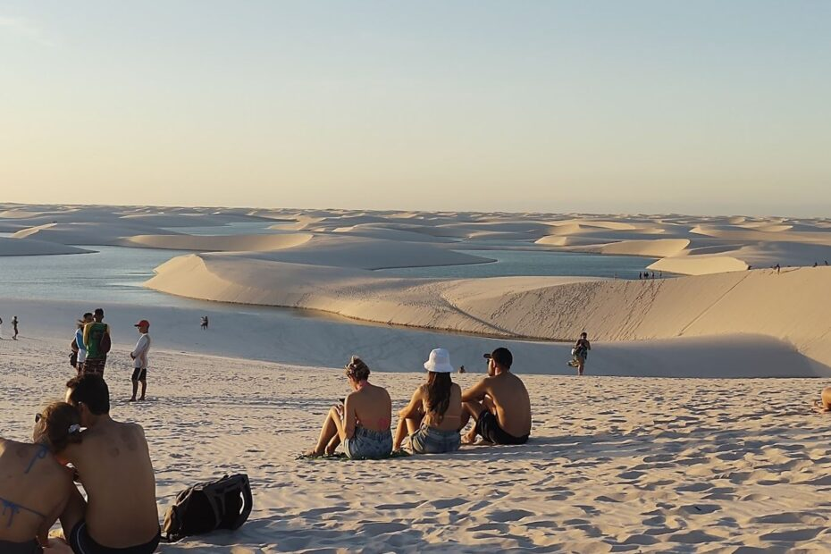

Os Lençóis Maranhenses são uma das mais impressionantes maravilhas naturais do Brasil, situados na costa nordeste do país, no estado do Maranhão. Este parque nacional é caracterizado por suas vastas extensões de dunas de areia branca que se estendem por cerca de 155 mil hectares, criando um cenário de beleza singular. As dunas, que chegam a alcançar até 40 metros de altura, são moldadas pelos ventos constantes que sopram do oceano Atlântico, criando formas sinuosas e ondulantes que se estendem até onde os olhos podem ver. A imponência dessas dunas atrai visitantes de todo o mundo, ansiosos para testemunhar essa paisagem deslumbrante e única.
Além das dunas majestosas, o que torna os Lençóis Maranhenses verdadeiramente excepcionais são suas inúmeras lagoas de água cristalina. Durante a estação chuvosa, que ocorre de janeiro a junho, as depressões entre as dunas são preenchidas com água das chuvas, criando uma paisagem deslumbrante de lagoas intermitentes. Essas lagoas, com suas águas transparentes e tonalidades que variam entre o verde e o azul turquesa, proporcionam um contraste impressionante com as areias brancas e as dunas douradas ao seu redor. É um espetáculo da natureza que cativa os visitantes, oferecendo a eles a oportunidade única de nadar, mergulhar e se refrescar em meio a uma paisagem deslumbrante e intocada.
Uma das características mais fascinantes dos Lençóis Maranhenses é sua natureza em constante transformação. As dunas e lagoas estão sujeitas às forças da natureza, com o vento esculpindo novas formas nas dunas e as chuvas sazonais alterando o panorama das lagoas. Essa dinâmica contínua cria uma experiência única para cada visitante, já que cada viagem revela uma paisagem ligeiramente diferente da anterior. Os Lençóis Maranhenses são mais do que um simples destino turístico; são um testemunho da beleza e da imprevisibilidade da natureza, um lugar onde os visitantes podem se conectar com a majestade e a grandiosidade do mundo natural.